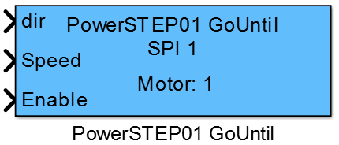
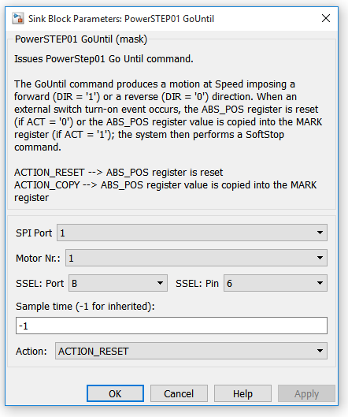
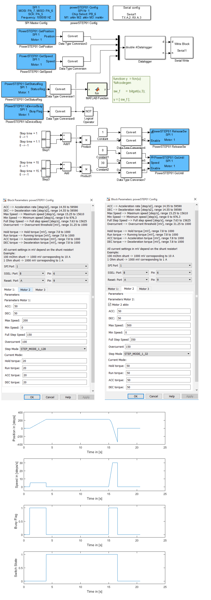

11.1.16. PowerSTEP01_GoUntil
11.1.16.1. Description
This block issues a PowerStep01 Go Until command to the selected motor driver. After the motor driver recived the Go Until command a motion in the specified direction and with the specified speed is performed, until the switch input is connected to ground and the SW_F flag in the status register is forced high. Then depending on the setting in the mask the specified action is performed and a Soft Stop command is issues.
{kind=link}
11.1.16.2. Parameters and Dialog Box
SPI Port
specify the SPI port number that should be used by the block.
Motor Number
specifies the motor in the daisychain.
SSEL Port/Pin
specify the mcu pin which is connected to the chip select pin from the driver. This block supports the naming schema: ‘P’ + letter ‘A’, ‘B’, ‘C’, … + ‘_’ + number ‘0’, ‘1’, … ‘15’, e.g. PA_0.
Sample Time
specifies the time interval between samples. To inherit the sample time, set this parameter to -1.
Action
specifies the action that should performed if the switch flag in the status register is forced high (switch input connected to ground). The possible actions correspond to the values defined in the POWERSTEP01 class:
ACTION_RESET –> ABS_POS register is reset
ACTION_COPY –> ABS_POS register value is copied into the MARK register
11.1.16.3. Example
11.1.16.4. Code Generation
Initialization Function
–
Step Function
- creates two lines in void <Model Name>_step(void) function
- if ( <ENABLE>== 1 )
- motor_<Motor Number>_spi <SPI Port>P<SSEL Port Name>_<SSEL Pin Number>-> GoUntil((motorAction_t) <ACTION>, (StepperMotor::direction_t) <DIR>, <SPEED>);